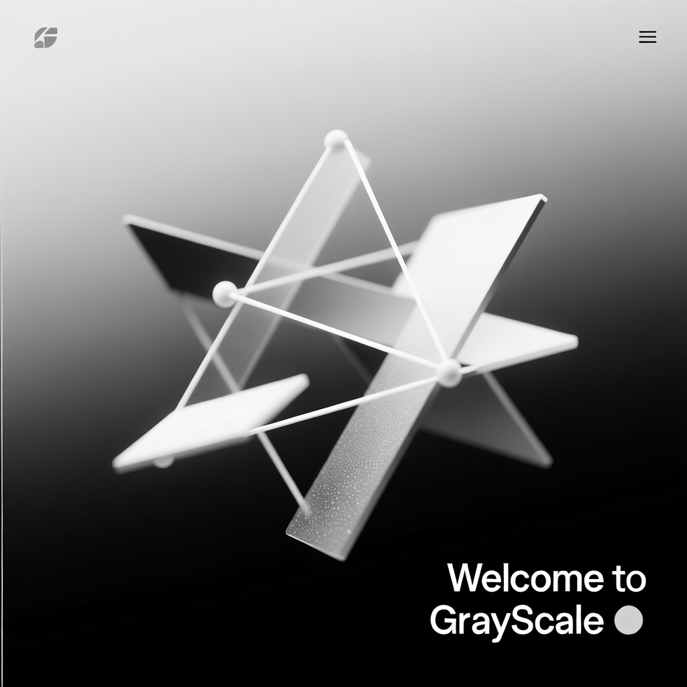

О нашей компании
- **GrayScale**
- *Минимализм. Серый. Смысл.*
В мире, переполненном шумом, цветом и суетой, мы выбираем тишину. GrayScale — это не просто эстетика. Это философия. Мы работаем в оттенках серого — от едва уловимого дымчатого до глубокого графитового. Потому что истинная суть скрывается не в избытке, а в умолчании. Не в крике, а в паузе. Наш минимализм — это чёткость форм, лаконичность решений и сосредоточенность на главном. Мы убираем всё лишнее, чтобы осталось только важное.
- **GrayScale** — где меньше становится больше.
- Где серый — не отсутствие цвета, а его полнота.
- *Меньше шума. Больше смысла.*